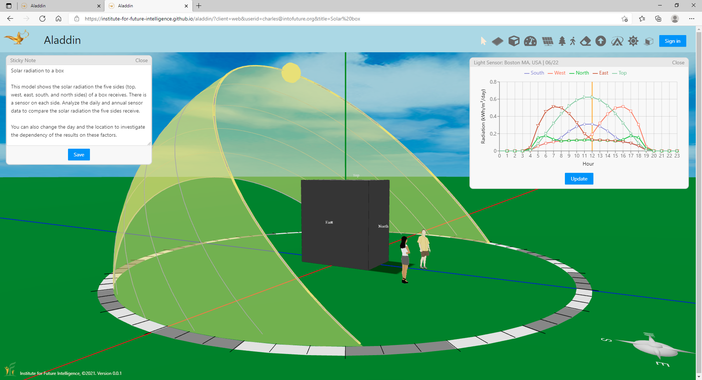
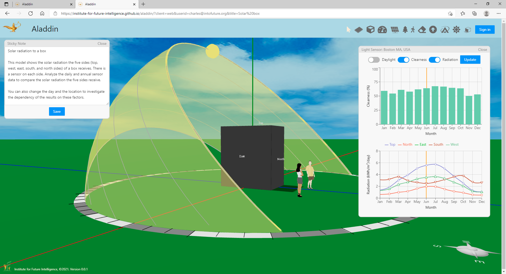
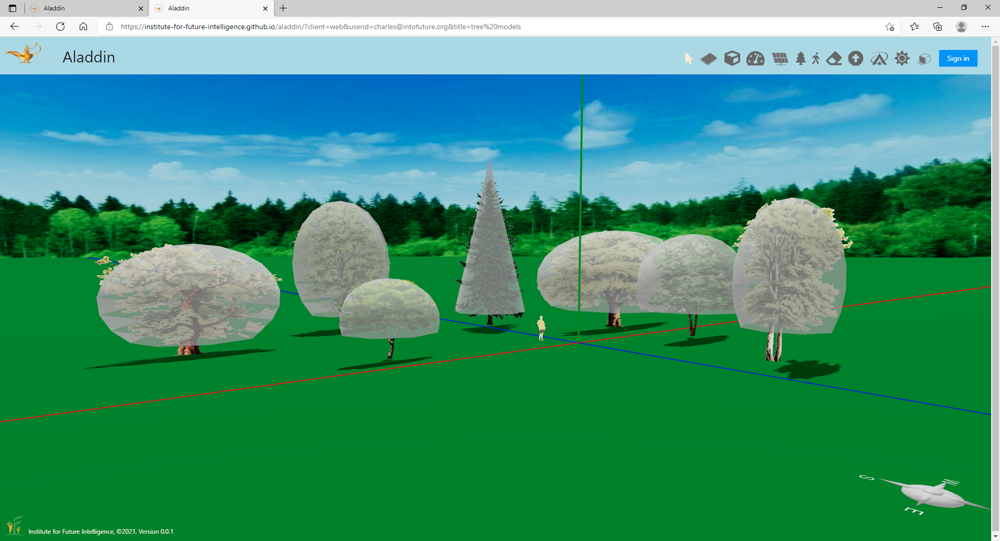
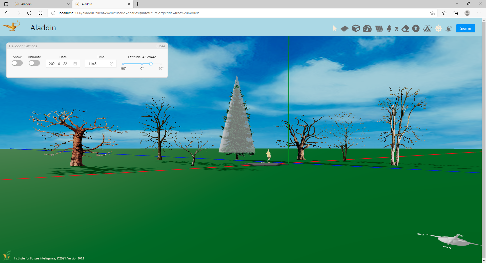
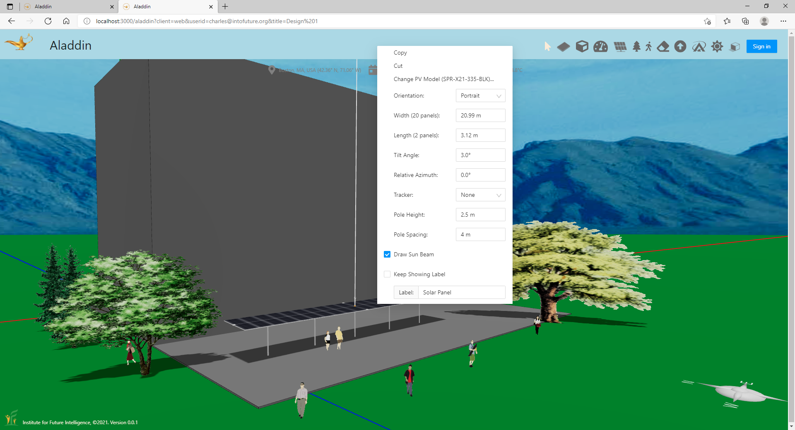
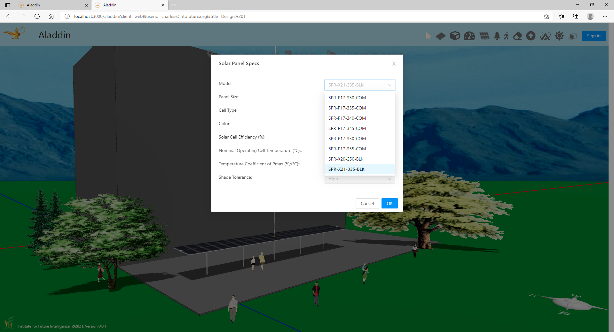
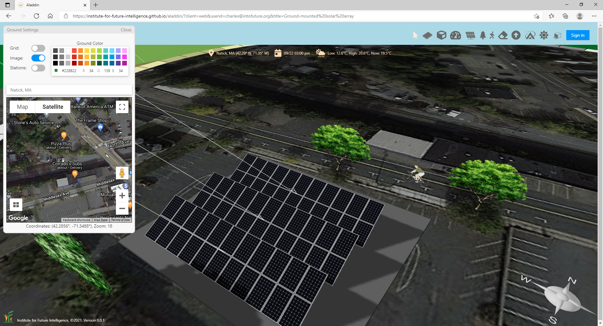
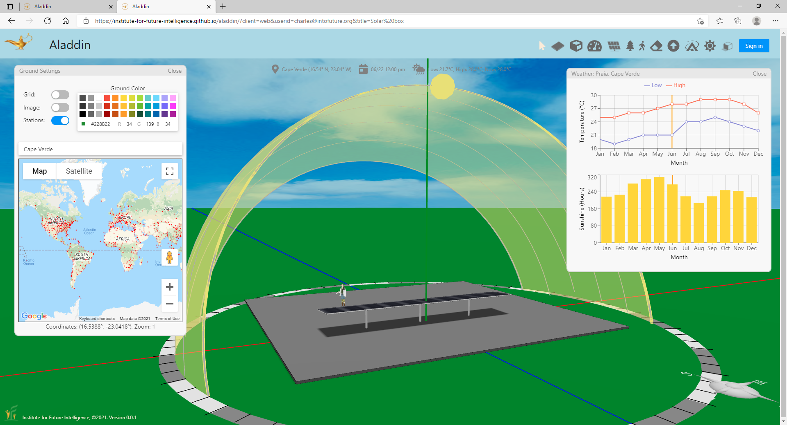

Aladdin is Coming to the Cloud
By Charles Xie
We have released a preview of the cloud version of Aladdin. Although we still have a long way to go to roll out a complete beta version, this preview already has a lot to offer. Take a look!
A virtual heliodon for visualizing the sun paths at different latitudes and seasons
Any AI relies on accurate evaluation of the objective function for a real-world problem. In other words, it should be able to tell a good solution from a bad one. Since Aladdin promises to show the power of AI in the context of renewable energy engineering, it is important to build simulation kernels that can model complex problems in the real world. One of the focus areas is solar energy. To support the design of solar energy solutions, Aladdin is equipped with a virtual heliodon for showing the sun paths at different latitudes and seasons. For those who do not already know, a heliodon is a mechnical device used in architectural engineering for setting the angle between a surface and a beam of light to simulate solar radiation on that surface.


The sun paths at different locations in the world in different seasons (the sun never sets in December in Antarctica)
Note: The sun beam shown in the above animation does not point exactly to the yellow circle that represents the sun in the heliodon (unless the origin of the beam is exactly at the origin of the coordinate system in Aladdin). As the sun is very far from the earth and the earth is relatively tiny compared with that distance, sunlight is considered as parallel light when it reaches the earth. Be aware of this when using the heliodon and the sun beam at the same time in Aladdin.
Comparing solar radiation to different surfaces
The following Aladdin model shows the solar radiation intensity received by the five sides (top, west, east, south, and north sides) of a box. We place a sensor on each side to generate data through solar radiation simulations. An interactive graph displays the daily sensor data for comparison of the solar radiation that shines on the five sides. We can change the day and the location to investigate the dependency of the results on these factors. We can also run annual simulations to collect sensor data over 12 months of the year.


Solar radiation on different surfaces of a box: Daily and yearly results
Click HERE for an Aladdin model
Modeling different types and sizes of trees
The following Aladdin model shows how trees are simulated in Aladdin. In reality, trees have extremely complex shapes that differ from one another. In Aladdin, each tree is shown as an image that always faces the user. But the real calculation uses a simplified model represented by the translucent shapes shown in the image below (they are not shown by default). The spread and height of each individual tree can be adjusted to create a canopy of a different size. The solar simulation in Aladdin also takes into account the fact that deciduous trees shed leaves in the winter (while evergreen trees do not).


Tree simulations in Aladdin
Click HERE for an Aladdin model
Supporting solar array design
As an engineering design tool for renewable energy, Aladdin will eventually support many different types of devices that can be used to capture solar and wind energy. The first type is photovoltaic solar panel. The following Aladdin model shows the menu for designing solar panel arrays. There are currently 77 different types of commercial solar panels available in Aladdin for the user to pick and choose.


Solar panel menu and specs in Aladdin
Click HERE for an Aladdin model
Using Google Maps as an engineering design canvas
Aladdin is an engineering design tool for solving problems in the real world. It is important that it supports users to address problems in areas that concern them. The following Aladdin model shows how Google Maps can be imported into Aladdin for use as a design canvas. Aladdin allows users to import satellite images from Google Maps and draw structures on top of them. It also provides basic weather data of 751 locations in the world. This ensures that most users have weather data that approximates their local climate. These locations are shown as red dots in the world map. Aladdin will automatically set the weather data for your design based on which of these locations are closest to the place where you are designing your solution for.


Google Maps and worldwide weather data in Aladdin
Click HERE for an Aladdin model
The road ahead
There are also many other features that we do not talk about in this article. For example, Aladdin allows the designer to store their files on the cloud and open them later on any device. Hence, there is no need to rely on a particular computer, which is a typical advantage of cloud-based software. Based on the current progress, we expect a beta version of Aladdin to be released to the public early next year. Stay tuned!